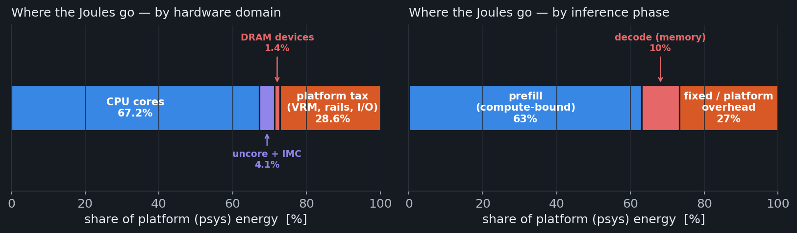
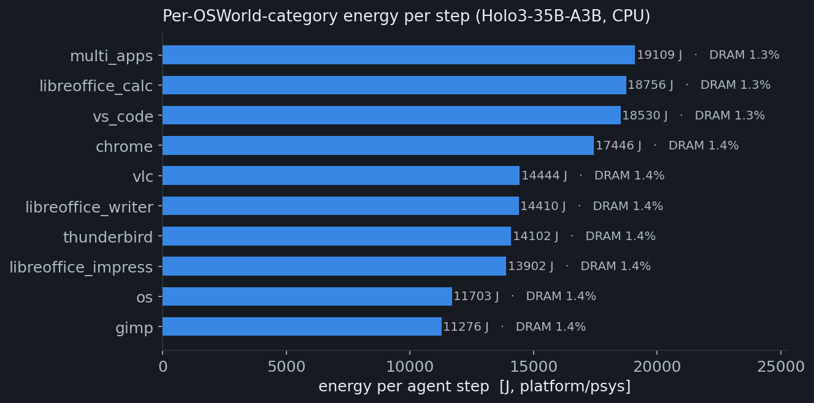
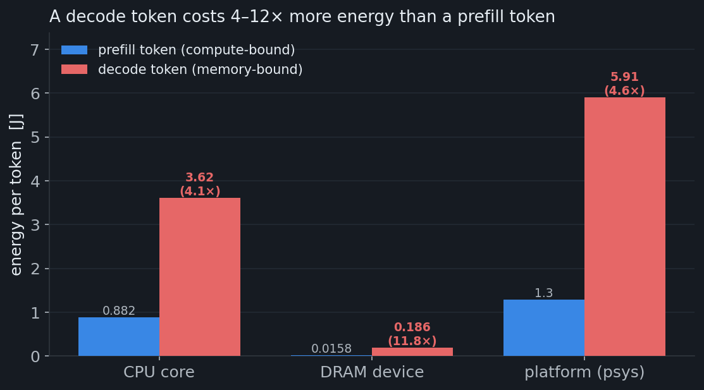
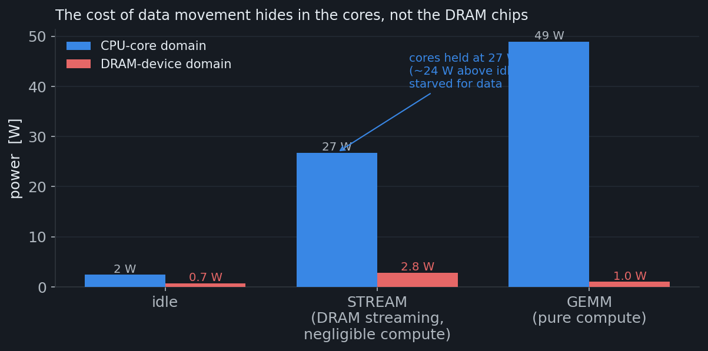
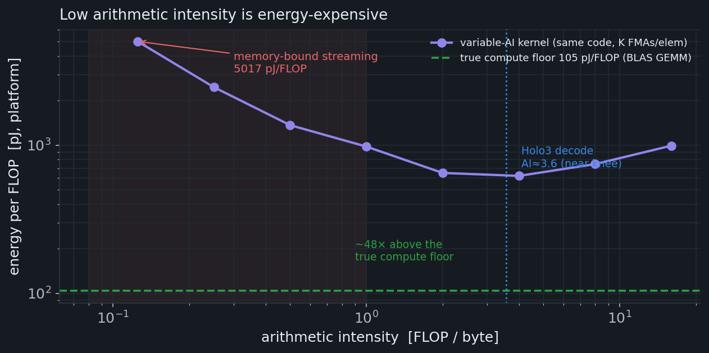
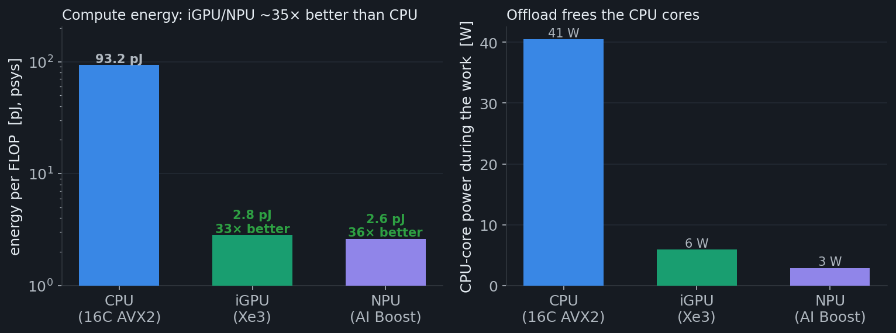
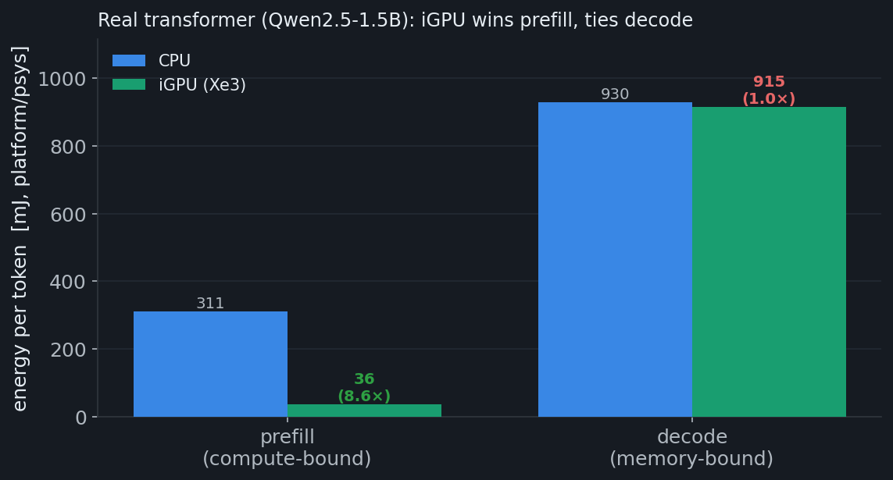

We ran the full OSWorld test set (all 10 desktop-app categories) through Holo3-35B-A3B on a fanless Intel Core Ultra 7 356H mini-PC and metered energy with Intel RAPL at three granularities — per task, per agent step, and per computation vs. data movement — then re-ran the workload on the iGPU and NPU. The starting hypothesis: moving data between DRAM and the processors dominates the energy.
RAPL psys/package/core/dramllama.cpp Q4_K_M OpenVINO 2026.0 iGPU+NPUno root · powercap sysfs run 2026-07-05
The only reliable energy instrument on this box (no root ⇒ turbostat,
perf, intel_gpu_top are all blocked) is the powercap RAPL
sysfs — which is the gold standard anyway and, crucially, exposes a separate
dram domain. We read five domains: psys (whole platform),
package-0 (CPU chip), core, uncore (iGPU/fabric),
and dram (the DIMMs). Energy is Δenergy_uj across each work
window; power traces are sampled at 10–20 Hz with a background thread that also
logs iGPU frequency and NPU busy-time. Idle baselines (psys 19.5 W) are subtracted
so the fixed platform draw is separated from the work.
Data sources: (A) a complete 141-task OSWorld run with per-step, per-domain energy
already on disk; (M2) STREAM + variable-arithmetic-intensity microkernels in C
(-O3 -march=native, OpenMP); (M3/M4) identical matmul + memory workloads
on CPU/iGPU/NPU via OpenVINO, plus a real transformer (Qwen2.5-1.5B) on CPU vs. iGPU
via llama.cpp Vulkan. Full-model Holo3-on-iGPU was skipped (21 GB would OOM the
shared box); the offload numbers below are the controlled synthetic + small-model
measurements, not a projection.

Across 141 completed tasks the agent spent 132 hours in the model for 135 hours of wall time — 98% of the run is inference, not the desktop environment. That is the macro-inefficiency: an average desktop task costs 70 Wh and ~56 minutes of compute. The counter-intuitive first result is that the dram domain — the literal DRAM chips your data moves to and from — draws under 1 W even at full tilt and is only 1.4% of the energy. If "data movement" meant "DRAM-device power," the hypothesis would be dead on arrival. It isn't — see §3.

| category | tasks | steps | Wh | kJ/step | DRAM% |
|---|---|---|---|---|---|
| multi_apps | 12 | 258 | 1370 | 19.1 | 1.3 |
| libreoffice_calc | 13 | 386 | 2011 | 18.8 | 1.3 |
| vs_code | 12 | 183 | 942 | 18.5 | 1.3 |
| chrome | 32 | 535 | 2593 | 17.4 | 1.4 |
| vlc | 12 | 175 | 702 | 14.4 | 1.4 |
| libreoffice_writer | 11 | 147 | 588 | 14.4 | 1.4 |
| thunderbird | 12 | 132 | 517 | 14.1 | 1.4 |
| libreoffice_impress | 13 | 150 | 579 | 13.9 | 1.4 |
| os | 11 | 81 | 263 | 11.7 | 1.4 |
| gimp | 13 | 89 | 278 | 11.3 | 1.4 |
Step energy is integrated from the consistent per-step profiles (core ≤ package ≤ psys). The as-shipped per-task summary field under-counts psys on ~10% of tasks and was not used.
Two inference phases sit on opposite sides of the roofline: prefill reads the 8k-token prompt and is compute-bound (weights reused across many tokens); decode generates one token at a time and is memory-bound — every token streams the model's active weights from DRAM once.


core, not dram.
dram domain but 768 pJ at
the platform (~20×) — because slow movement keeps the whole ~20 W platform awake longer.
Caveat: on this client SoC the RAPL dram domain is a
partial/modeled estimate of DRAM access energy (it excludes refresh, I/O, termination and
the on-die memory-controller/PHY, which fold into package), so the 1.4% and
39 pJ/byte are lower bounds on true memory-system energy — which strengthens, not weakens,
the point that movement cost is hidden outside the dram meter.
So why isn't decode the top energy line? Because the OSWorld agent re-sends a ~8,000-token prompt (three screenshots + accessibility tree) every step but generates only ~284 tokens — a 28.5× prefill:decode token ratio. Prefill is cheap per token yet enormous in aggregate (~63% of energy); decode is expensive per token but small in volume (~10%).
Same workloads, three engines. The user directive: quality irrelevant, just measure the energy.


| engine | GFLOP/s | pJ/FLOP (compute) | vs CPU energy | core W during work | real-model prefill mJ/tok |
|---|---|---|---|---|---|
| CPU · 16C AVX2 | 474 | 93.2 | 1× | 40.5 | 311 |
| iGPU · Xe3 | 11,951 | 2.84 | 33× | 5.9 | 36 |
| NPU · AI Boost | 11,408 | 2.61 | 36× | 2.9 | — |
The synthetic 33×/36× compares iGPU fp16 / NPU int8 against CPU fp32 (the realistic deployment precision for each engine, per the "quality irrelevant" directive) — it is a device+precision figure, an upper bound on the device-alone gain. The apples-to-apples number is the real-model prefill 8.6×. NPU real-model prefill was not run (the 1.5B GGUF path targets CPU/Vulkan).
Ranked by measured leverage against the 9.8 kWh total:
| # | lever | attacks | share | mechanism / measured basis |
|---|---|---|---|---|
| 1 | Shrink the re-sent prompt (downscale/crop screenshots, prune the a11y tree) + cache the stable head | repeated prefill | ≤63% | 8,078 prompt tokens re-encoded every step. The screenshot + a11y tree is fresh each step (the screen changes after each action), so prefix caching only removes the stable head (system + task) — a fraction of the 63%; the bigger lever is making the per-step prompt smaller. |
| 2 | Offload prefill to iGPU / NPU | prefill compute | 63% | Prefill is compute-bound ⇒ 8.6× less energy on a real model (up to 33× on synthetic fp16 matmul), and frees the cores. |
| 3 | Race-to-idle | platform tax | 27% | A fixed ~20 W (VRM/rails/I/O) is billed for every second the box is awake. Levers 1–2 shorten wall time ⇒ shrink the fixed-power × time integral directly. |
| 4 | Cut bytes/token (lower-bit quant, fewer active experts, spec-decode) | decode | 10% | Decode is memory-bound; offload barely helps (shared DRAM). The lever that works is moving fewer bytes per token — decode pays a 4.6×/token premium (11.8× in the DRAM domain) precisely because it re-streams the active weights each token. |
Honesty notes. (1) uncore reads ~0 during CPU inference — on Panther
Lake the memory-controller/PHY energy folds into package, so the on-chip
data-movement cost sits inside the core/package figures, not
separately metered; and the dram domain is a partial/modeled client-SoC
estimate, so the 1.4% share is a lower bound. (2) The phase split is an OLS regression on
2,136 real steps (R²=0.96), with prefill work defined as
max(0, prompt_tokens − cached_tokens) (tokens actually re-encoded). It is
predictor-dependent: prefill lands at 56–74% and fixed at 16–34% depending
on whether cached tokens are counted; decode ~10% is robust across definitions,
and the intercept independently matches idle-power × inference-time. (3) Per-domain
watts are raw (busy); pJ/byte and pJ/FLOP are net of the idle
baseline. (4) The accelerator 33×/36× is fp16/int8 vs fp32 (device+precision); the
real-model 8.6× is the apples-to-apples figure. (5) iGPU/NPU energy is a controlled
synthetic workload + a 1.5B real transformer; the 35B Holo3 itself was not run on the
iGPU (would OOM the shared box). (6) Absolute totals use the consistent per-step
integration; the shipped per-task energy_j field under-counts psys and was
discarded.
2026-07-05_osworld-energy-profile ·
Xuming Huang